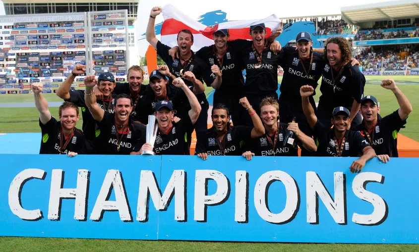
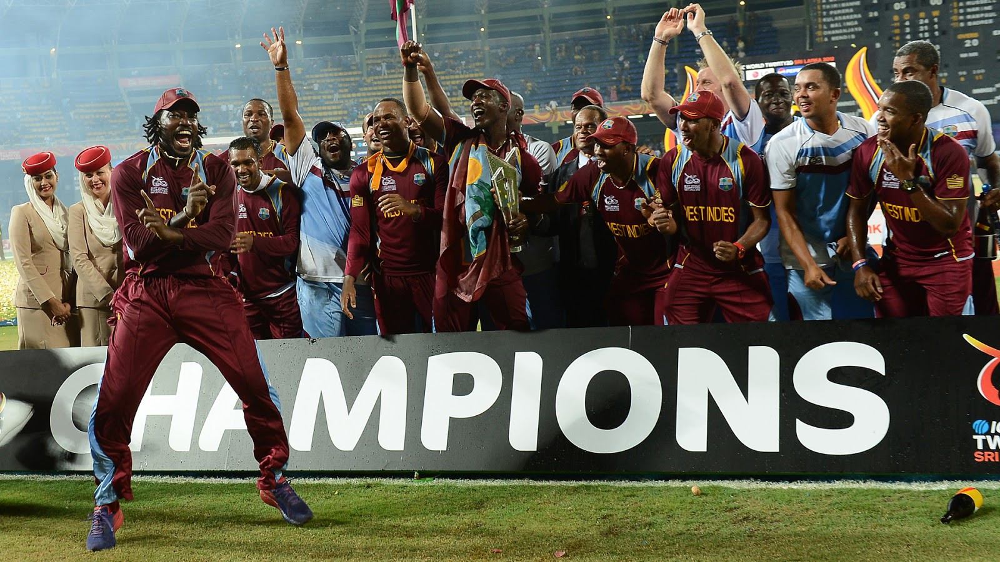
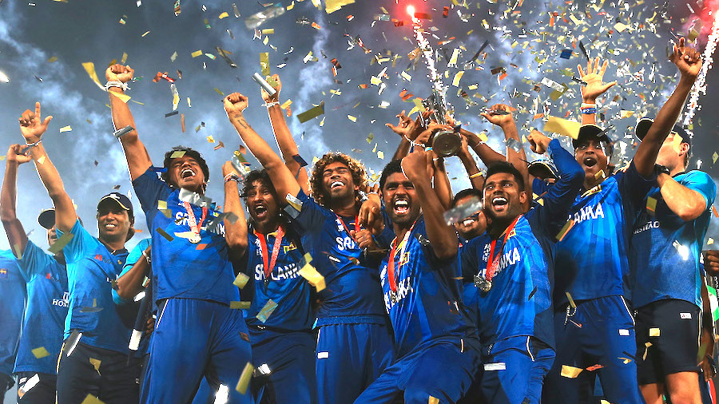
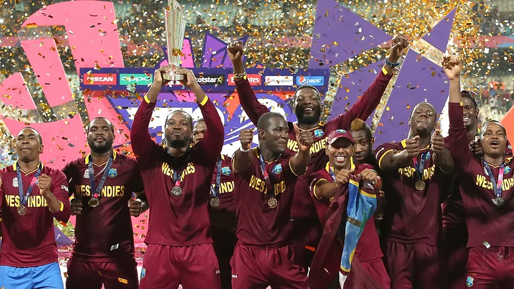
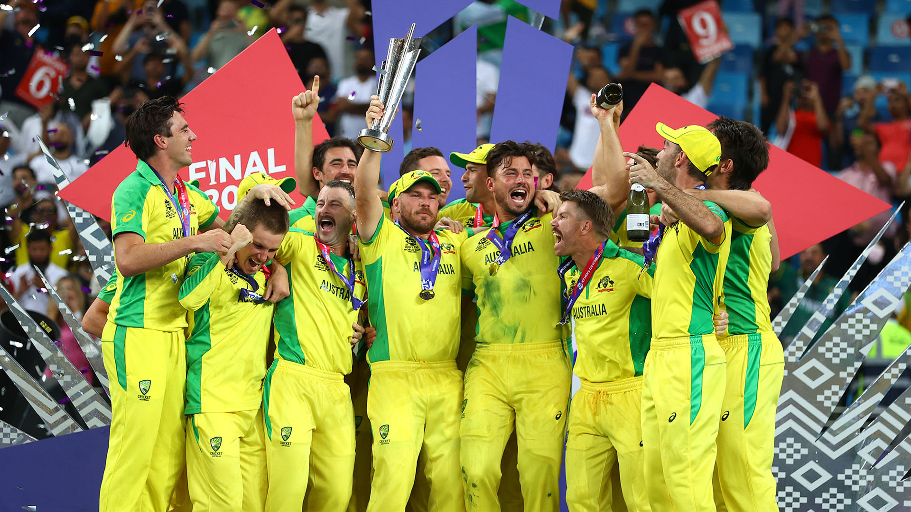

In ICC cricket world cup 2009 final, Pakistan 139 for 2 (Afridi 54*, Akmal 37) beat Sri Lanka 138 for 6 (Sangakkara 64*, Mathews 35*, Razzaq 3-20) by eight wickets.

In ICC cricket world cup 2010 final, England 148 for 3 (Kieswetter 63) beat Australia 147 for 6 (D Hussey 59) by seven wickets.

In ICC cricket world cup 2012 final, West Indies 137 for 6 (Samuels 78, Sammy 26*, Mendis 4-12) beat Sri Lanka 101 (Jayawardene 33, Kulasekara 26, Narine 3-9, Sammy 2-6) by 36 runs

In ICC cricket world cup 2014 final, Sri Lanka 134 for 4 (Sangakkara 52*, Jayawardene 24) beat India 130 for 4 (Kohli 77) by 6 wickets

In ICC cricket world cup 2016 final, West Indies 161 for 6 (Samuels 85*, Brathwaite 34*, Willey 3-20) beat England 155 for 9 (Root 54, Brathwaite 3-23, Bravo 3-37) by four wickets

In ICC cricket world cup 2021 final, Australia 173 for 2 (Marsh 77*, Warner 53, Boult 2-18) beat New Zealand 172 for 4 (Williamson 85, Hazlewood 3-16) by eight wickets.